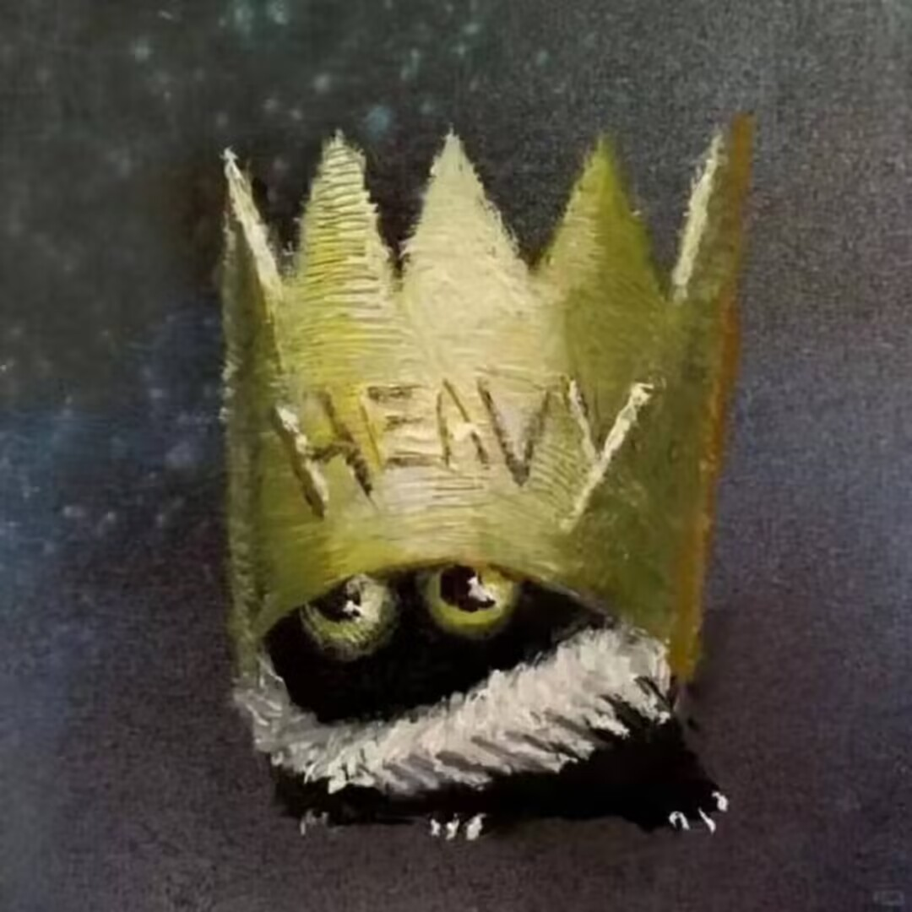

01
.venv 虚拟环境管理
虽然还没到依赖互相打架的地步，但好习惯要提前养成，这样传Github的也不至于是依托彻底的大粪
PERSONAL BLOG / SINCE 2026
给岁月以文明，
而不是给文明以岁月。
这里是 Yank 的个人空间。
一些技术笔记、生活记录，以及随手做的小玩意。
// 一点好奇心，一点行动力。
const yank = {
loves: ['code', 'music'],
status: 'still learning',
next: 'keep building'
};01 / LATEST NOTES
虽然还没到依赖互相打架的地步，但好习惯要提前养成，这样传Github的也不至于是依托彻底的大粪
鸽了好几天，友链现已基本成型
按道理这一篇应该是占位符来着？
